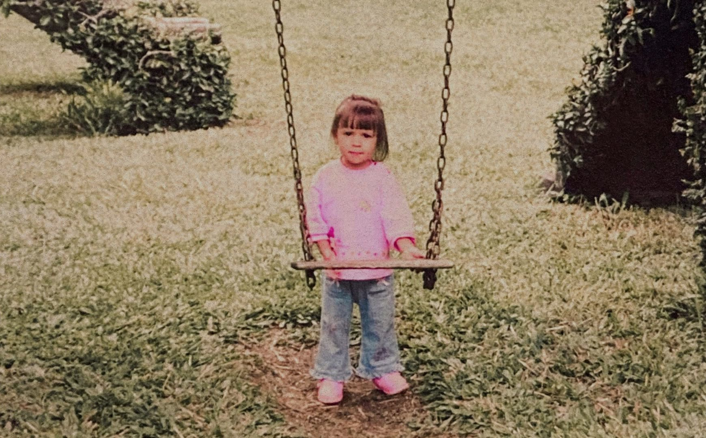

Beatriz Chianello
Estudante de Publicidade e Propaganda em Niterói. Escrevo, fotografo em filme e reúno aqui textos, fotografias analógicas e projetos de comunicação e audiovisual.

Estudante de Publicidade e Propaganda em Niterói. Escrevo, fotografo em filme e reúno aqui textos, fotografias analógicas e projetos de comunicação e audiovisual.